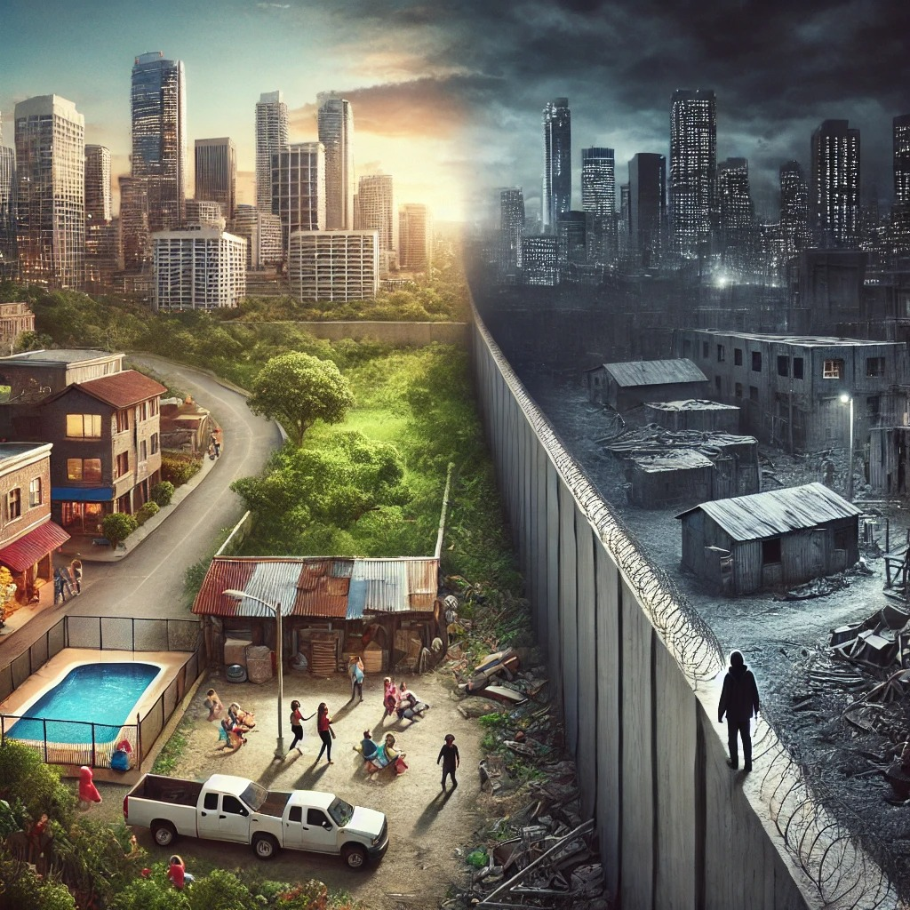
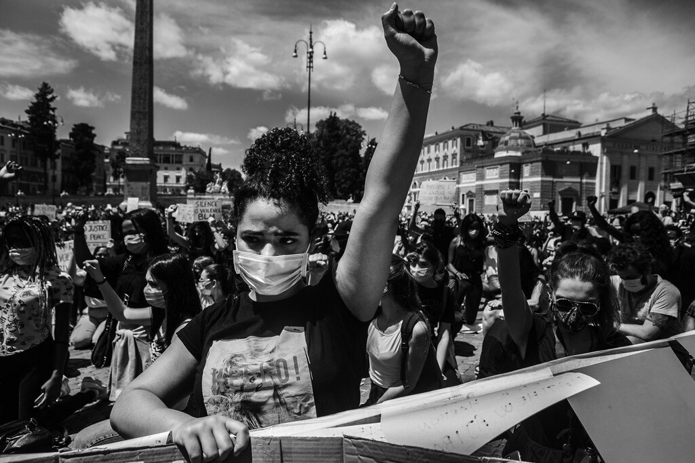

Cos'è il razzismo?
Il razzismo è una forma di discriminazione basata sulla razza, sull'etnia e sull'aspetto fisico di una persona ed è una delle più diffuse al mondo. Si manifesta attraverso pregiudizi, stereotipi e atteggiamenti ostili nei confronti di persone appartenenti a gruppi etnici diversi, e può sfociare in violenze fisiche, verbali o sociali.

Quando è nato?
Le origini del razzismo risalgono ai primi periodi di colonizzazione e schiavitù. I popoli che venivano conquistati venivano maltrattati e ridotti in schiavitù, il che portò a una visione di superiorità di alcuni gruppi etnici su altri.
Razzismo Oggi
Il razzismo è presente da secoli, ma negli ultimi anni si è evoluto sempre di più. Oggi possiamo riconoscere due forme principali di razzismo:
razzismo sistemico e discriminazione razziale nei media.
Il Razzismo sistemico si manifesta nei campi politici, come leggi, che creano disuguaglianze fra vari enti:
istruzione, sanità, scuola e sistema giudiziario.

La discriminazione razziale nei media avviene spesso tra i giovani attraverso i social, nei quali,
sin da quando sono stati creati, è aumentato il numero di persone affette da razzismo, con stereotipi negativi
sulle persone di colore, rappresentandole come pericolose o ignoranti.
Effetti del Razzismo nella Società
Il razzismo ha generato vari problemi di vita quotidiana tra cui: l’Esclusione sociale che si manifesta quando le persone discriminate, vengono allontanate dalla società prendendole in giro e loro stesse si allontanano perché si reputano inferiori delle persone che gli stanno a fianco. La causa di questo può essere anche per la Violenza fisica e verbale avviene quando attraverso varie discriminazioni possono sorgere vari atti di vandalismo/ violenza fisica contro la persona, oppure può avvenire attraverso insulti razziali su tale persona
Come Combattere il Razzismo
Ci sono vari approcci per rendere più unita la società di oggi, per esempio attraverso l’educazione che sin da quando si entra in una scuola o attraverso i genitori bisogna sensibilizzare le diversità etniche creando attività in cui si devono includere le persone che hanno subito tale disgrazia. Un altro modo è inserire più leggi antirazzismo in campi lavorativi, sociali, politici e che le facciano rispettare in modo equo per tutti. Poi possiamo trovare delle persone che creano dei movimenti che vanno contro queste forme di razzismo e sensibilizzano tutte le diversità sociali.

Conclusione
Il razzismo non è solo un problema delle singole persone che lo praticano, ma è un problema strutturale che riguarda l'intera società. Combattere il razzismo richiede un impegno collettivo per promuovere l'uguaglianza, la giustizia e il rispetto per le diversità. La consapevolezza, l'educazione e l'azione sono essenziali per un cambiamento positivo.
Testa le tue Conoscenze
Per testare la tua conoscenza sul razzismo, clicca sul pulsante qui sotto per accedere al quiz.
Inizia il QuizSe desideri tornare alla pagina precedente, clicca sul link qui sotto.
Vai alla prossima pagina O Torna alla Home